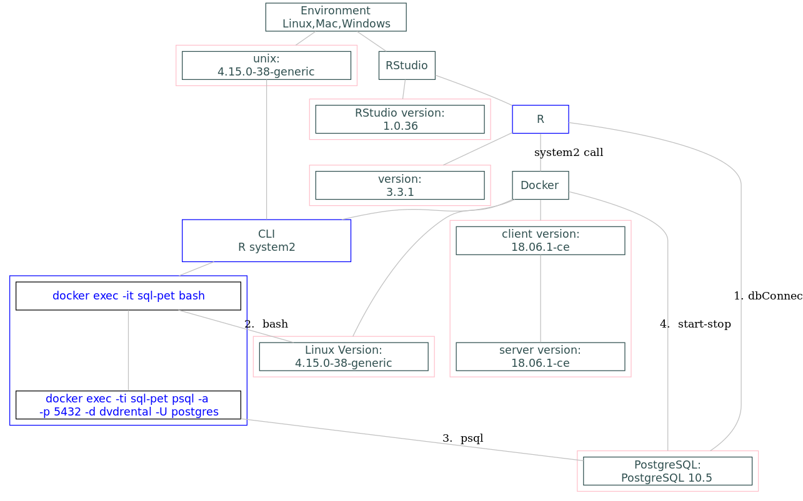

Chapter 7 Mapping your local environment (10)
7.1 Basics
- Keeping passwords secure.
- Coverage in this book. There are many SQL tutorials that are available. For example, we are drawing some materials from a tutorial we recommend. In particular, we will not replicate the lessons there, which you might want to complete. Instead, we are showing strategies that are recommended for R users. That will include some translations of queries that are discussed there.
7.2 Ask yourself, what are you aiming for?
- Differences between production and data warehouse environments.
- Learning to keep your DBAs happy:
- You are your own DBA in this simulation, so you can wreak havoc and learn from it, but you can learn to be DBA-friendly here.
- In the end it’s the subject-matter experts that understand your data, but you have to work with your DBAs first.
7.3 Get some basic information about your database
Assume that the Docker container with PostgreSQL and the dvdrental database are ready to go.
Start up the docker-pet container
Now connect to the dvdrental database with R.
The following code block confirms that one can connect to the Postgres database. The connection is needed for some of the examples/exercises used in this section. If the connection is successful, the output is <PostgreSQLConnection>.
con <- sp_get_postgres_connection(
user = Sys.getenv("DEFAULT_POSTGRES_USER_NAME"),
password = Sys.getenv("DEFAULT_POSTGRES_PASSWORD"),
dbname = "dvdrental",
seconds_to_test = 10)
con## <PqConnection> dvdrental@localhost:54327.4 Tutorial Environment
Below is a high level diagram of our tutorial environment. The single black or blue boxed items are the apps running on your PC, (Linux, Mac, Windows), RStudio, R, Docker, and CLI, a command line interface. The red boxed items are the versions of the applications shown. The labels are to the right of the line.

7.5 Communicating with Docker Applications
One assumption we made is that most users use RStudio to interface with R. The four take aways from the diagram above are labeled:
- dbConnect
R-SQL processing, the purpose of this tutorial, is performed via a database connection. This should be a simple task, but often turns out to take a lot of time to actually get it to work. We assume that your final write ups are done in some flavor of an Rmd document and others will have access to the database to confirm or further your analysis.
One focus of this tutorial is SQL processing through a dbConnection and we will come back to this in a future section. The remainder of this section focuses on some specific Docker commands.
- bash
The Docker container runs on top of a small Linux kernel foot print. Since Mac and Linux users run a version of Linux already, they may want to poke around the Docker environment. Below is the CLI command to start up a bash session, execute a version of hello world, and exit the bash session.
c:\Git\sql-pet>docker exec -ti sql-pet bash
root@7e43294b72cf:/# echo "'hello world'" talking to you live from a bash shell session within Docker!
'hello world' talking to you live from a bash shell session within Docker!
root@7e43294b72cf:/# exit
exitNote that the user in the example is root. Root has all priviledges and can destroy the Docker environment.
- psql
For users comfortable executing SQL from a command line directly against the database, one can run the psql application directly. Below is the CLI command to start up psql session, execute a version of hello world, and quitting the psql version.
c:\Git\sql-pet>docker exec -ti sql-pet psql -a -p 5432 -d dvdrental -U postgres
psql (10.5 (Debian 10.5-1.pgdg90+1))
Type "help" for help.
dvdrental=# select '"hello world" talking to you live from postgres session within Docker!' hello;
hello
------------------------------------------------------------------------
"hello world" talking to you live from postgres session within Docker!
(1 row)
dvdrental=# `\q`All SQL commands need to end with a semi-colon. To exit psql, use a \q at the command prompt.
The docker bash and psql command options are optional for this tutorial, but open up a gateway to some very powerful programming techniques for future exploration.
- start-stop
Docker has about 44 commands. We are interested in only those related to Postgres status, started, stopped, and available. In this tutorial, complete docker commands are printed out before being executed via a system2 call. In the event that a code block fails, one can copy and paste the docker command into your local CLI and see if Docker is returning additional information.
7.6 Exercises
Docker containers have a small foot print. In our container, we are running a limited Linux kernel and a Postgres database. To show how tiny the docker environment is, we will look at all the processes running inside Docker and the top level file structure.
7.6.1 Docker Help
Typing docker at the command line will print up a summary of all available docker commands. Below are the docker commands used in the exercises.
Commands:
ps List containers
start Start one or more stopped containers
stop Stop one or more running containersThe general format for a Docker command is
docker [OPTIONS] COMMAND ARGUMENTSBelow is the output for the Docker exec help command which was used in the bash and psql command examples above and for an exercise below.
C:\Users\SMY>docker help exec
Usage: docker exec [OPTIONS] CONTAINER COMMAND [ARG...]
Run a command in a running container
Options:
-d, --detach Detached mode: run command in the background
--detach-keys string Override the key sequence for detaching a
container
-e, --env list Set environment variables
-i, --interactive Keep STDIN open even if not attached
--privileged Give extended privileges to the command
-t, --tty Allocate a pseudo-TTY
-u, --user string Username or UID (format:
<name|uid>[:<group|gid>])
-w, --workdir string Working directory inside the containerIn these exercies, the -i option and the CONTAINER = sql-pet are used in two of the exercises.
Start up R/RStudio and convert the CLI command to an R/RStudio command
| # | Question | Docker CLI Command | R RStudio command | Local Command LINE |
|---|---|---|---|---|
| 1 | How many processes are running inside the Docker container? | docker exec -i sql-pet ps -eF | ||
| 1a | How many process are running on your local machine? | widows: tasklist Mac/Linux: ps -ef | ||
| 2 | What is the total number of files and directories in Docker? | docker exec -i sql-pet ls -al | ||
| 2a | What is the total number of files and directories on your local machine? | |||
| 3 | Is Docker Running? | docker version | ||
| 3a | What are your Client and Server Versions? | |||
| 4 | Does Postgres exist in the container? | docker ps -a | ||
| 4a | What is the status of Postgres? | docker ps -a | ||
| 4b | What is the size of Postgres? | docker ps -a | ||
| 4c | What is the size of your laptop OS | https://www.quora.com/What-is-the-actual-size-of-Windows-10-ISO-file | ||
| 5 | If sql-pet status is Up, How do I stop it? | docker stop sql-pet | ||
| 5a | If sql-pet status is Exited, How do I start it? | docker start sql-pet |
| In | Dplyr Function | description | SQL Clause | Notes | Category |
|---|---|---|---|---|---|
| Y | arrange() | Arrange rows by variables | ORDER BY | Basic single-table verbs | |
| Y? | distinct() | Return rows with matching conditions | SELECT distinct * | Basic single-table verbs | |
| Y | select() rename() | Select/rename variables by name | SELECT column_name alias_name | Basic single-table verbs | |
| N | pull() | Pull out a single variable | SELECT column_name; | Basic single-table verbs | |
| Y | mutate() transmute() | Add new variables | SELECT computed_value computed_name | Basic single-table verbs | |
| Y | summarise() summarize() | Reduces multiple values down to a single value | SELECT aggregate_functions GROUP BY | Basic single-table verbs | |
| N | group_by() ungroup() | Objects exported from other packages | GROUP BY no ungroup | Basic single-table verbs | |
| N | distinct() | Select distinct/unique rows | SELECT distinct {colname1,…colnamen} | Basic single-table verbs | |
| N | do() | Do anything | NA | Basic single-table verbs | |
| N | sample_n() sample_frac() | Sample n rows from a table | ORDER BY RANDOM() LIMIT 10 | Basic single-table verbs | |
| N | slice() | Select rows by position | SELECT row_number() over (partition by expression(s) order_by exp) | Basic single-table verbs | |
| Y | tally() count() add_tally() add_count() | Count/tally observations by group | GROUP BY | Single-table helpers | |
| Y | top_n() | Select top (or bottom) n rows (by value) | ORDER BY VALUE {DESC} LIMIT 10 | Single-table helpers | |
| N | arrange_all() arrange_at() arrange_if() | Arrange rows by a selection of variables | ORDER BY | scoped-Operate on a selection of variables | |
| N | filter_all() filter_if() filter_at() | Filter within a selection of variables | scoped-Operate on a selection of variables | ||
| N | group_by_all() group_by_at() group_by_if() | Group by a selection of variables | scoped-Operate on a selection of variables | ||
| N | select_all() rename_all() select_if() rename_if() select_at() rename_at() | Select and rename a selection of variables | scoped-Operate on a selection of variables | ||
| N | summarise_all() summarise_if() summarise_at() summarize_all() summarize_if() summarize_at() mutate_all() mutate_if() mutate_at() transmute_all() transmute_if() transmute_at() | Summarise and mutate multiple columns. | scoped-Operate on a selection of variables | ||
| N | all_vars() any_vars() | Apply predicate to all variables | scoped-Operate on a selection of variables | ||
| N | vars() | Select variables | scoped-Operate on a selection of variables | ||
| N | funs() | Create a list of functions calls. | scoped-Operate on a selection of variables | ||
| N | all_equal() all.equal( |
Flexible equality comparison for data frames | Two-table verbs | ||
| N | bind_rows() bind_cols() combine() | Efficiently bind multiple data frames by row and column | Two-table verbs | ||
| N | intersect() union() union_all() setdiff() setequal() | Set operations | Two-table verbs | ||
| N | inner_join() left_join() right_join() full_join() semi_join() anti_join() | Join two tbls together | Two-table verbs | ||
| N | inner_join( |
Join data frame tbls | Two-table verbs | ||
| N | auto_copy() | Copy tables to same source, if necessary | Remote tables | ||
| N | compute() collect() collapse() | Force computation of a database query | Remote tables | ||
| N | copy_to() | Copy a local data frame to a remote src | Remote tables | ||
| N | ident() | Flag a character vector as SQL identifiers | Remote tables | ||
| N | explain() show_query() | Explain details of a tbl | Remote tables | ||
| N | tbl() is.tbl() as.tbl() | Create a table from a data source | Remote tables | ||
| N | src_mysql() src_postgres() src_sqlite() | Source for database backends | Remote tables | ||
| N | sql() | SQL escaping. | Remote tables | ||
| N | groups() group_vars() | Return grouping variables | Metadata | ||
| N | between() | Do values in a numeric vector fall in specified range? | Vector functions | ||
| N | case_when() | A general vectorised if | Vector functions | ||
| N | coalesce() | Find first non-missing element | Vector functions | ||
| N | cumall() cumany() cummean() | Cumulativate versions of any, all, and mean | Vector functions | ||
| N | desc() | Descending order | Vector functions | ||
| N | if_else() | Vectorised if | Vector functions | ||
| N | lead() lag() | Lead and lag. | Vector functions | ||
| N | order_by() | A helper function for ordering window function output | Vector functions | ||
| N | n() | The number of observations in the current group. | Vector functions | ||
| N | n_distinct() | Efficiently count the number of unique values in a set of vector | Vector functions | ||
| N | na_if() | Convert values to NA | Vector functions | ||
| N | near() | Compare two numeric vectors | Vector functions | ||
| N | nth() first() last() | Extract the first, last or nth value from a vector | Vector functions | ||
| N | row_number() ntile() min_rank() dense_rank() percent_rank() cume_dist() | Windowed rank functions. | Vector functions | ||
| N | recode() recode_factor() | Recode values | Vector functions | ||
| N | band_members band_instruments band_instruments2 | Band membership | Data | ||
| N | nasa | NASA spatio-temporal data | Data | ||
| N | starwars | Starwars characters | Data | ||
| N | storms | Storm tracks data | Data | ||
| N | tbl_cube() | A data cube tbl | Other backends | ||
| N | as.table( |
Coerce a tbl_cube to other data structures | Other backends | ||
| N | as.tbl_cube() | Coerce an existing data structure into a tbl_cube | Other backends | ||
| N | rowwise() | Group input by rows | Other backends |